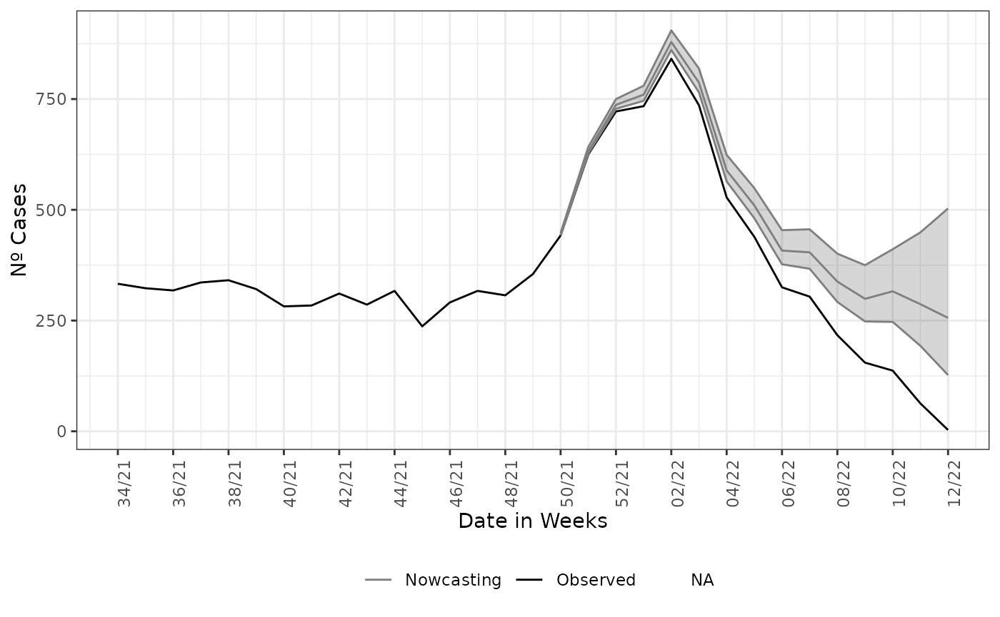

Nowcasting on Structured data
Rafael Lopes & Leonardo Bastos
Source:vignettes/articles/1_structured_data.Rmd
1_structured_data.RmdTL;DR
This is a longer article explaining the workings and the choices behind the nowcasting model and its advantages and limitations.
As Before…
As in the Get Started we start by loading the package and its lazy data, by:
Non-structured data
The Get Started example is done on non-structured data, here we give a more a detailed description of this type of data and how it can change the nowcasting.
When we call the nowcasting_inla() function,
it has by default, the parameterization takes the data and estimates with a
non-structured data form. The estimate fits a negative binomial
distribution,
,
to the case count at a time
with delay
,
is the dispersion parameter. The rate
is then parametric in a log-linear format with a constant term added by
structured delay, random effects, and structured time random effects. This
is the whole premise of nowcasting, we model the case counts at time
Given the case count at that time and past values, as well as given the
delay the distribution of that count.
Hence, the model is given by the following:
$$\begin{equation} Y_{t,d} \sim NegBinom(\lambda_{t,d}, \phi), \\ \log(\lambda_{t,d}) = \alpha + \beta_t + \gamma_d, \\ \beta_t := u_t - u_{(t-1)} - u_{(t-2)} \sim N(0,\tau_{\beta}); \gamma_d := u_d - u_{(d-1)} \sim N(0, \tau_{\gamma})\\ t=1,2,\ldots,T, \\ d=1,2,\ldots,D, \end{equation}$$
Where the intercept
follows a Gaussian distribution with a very large variance,
follows a second-order random walk with precision
,
while
a first-order random walk with precision
.
The model is then completed by INLA's default prior distributions for
,
,
and
.
See nbinomial,
rw1
and rw2
INLA help pages.
The call of the function is straightforward; it simply needs data
set as input, here the LazyData loaded in the package namespace.
The function has 3 mandatory parameters,
dataset to parse the data set to be nowcasted,
date_onset for parsing the column name, which is the date of
onset of symptoms and date_report which parses the column
name for the date of the report of the cases. Here, these columns are
“DT_SIN_PRI” and “DT_DIGITA”, respectively. The need for two dates is due to
we are modeling the delay as part of the nowcasting estimation, usually
nowcasting models, assuming a delay distribution and applying it to the
cases observed.
nowcasting_bh_no_age <- nowcasting_inla(dataset = sragBH,
date_onset = DT_SIN_PRI,
date_report = DT_DIGITA)
head(nowcasting_bh_no_age$total)
#> # A tibble: 6 × 7
#> Time dt_event Median LI LS LIb LSb
#> <int> <date> <dbl> <dbl> <dbl> <dbl> <dbl>
#> 1 17 2021-12-13 444 442 448 443 445
#> 2 18 2021-12-20 632 626 641 630 634
#> 3 19 2021-12-27 736 727 749 733 740
#> 4 20 2022-01-03 759 746. 779 754 765.
#> 5 21 2022-01-10 879 861 903 872 887
#> 6 22 2022-01-17 786 765 816 778 795The above calling will return only the nowcasting estimate and its
Confidence Interval (CI) for two different credibility levels,
LIb and LSb are the max and min CI,
respectively, with credibility of 50% and LI and
LS are the max and min CI, respectively, with credibility
of 95%.
The nowcasting_inla has the option to return the curve
on which the window of action of the model was set, if the
data.by.week parameter is flagged as TRUE it
returns on the second element of the output list, the summarized data by
week.
nowcasting_bh_no_age <- nowcasting_inla(dataset = sragBH,
date_onset = DT_SIN_PRI,
date_report = DT_DIGITA,
data.by.week = T)
head(nowcasting_bh_no_age$data)
#> # A tibble: 6 × 4
#> dt_event delay Y Time
#> <date> <dbl> <dbl> <int>
#> 1 2021-08-23 0 8 1
#> 2 2021-08-23 1 70 1
#> 3 2021-08-23 2 92 1
#> 4 2021-08-23 3 68 1
#> 5 2021-08-23 4 32 1
#> 6 2021-08-23 5 32 1This element is the count of cases by each delay day. It is known as the delay triangle, if we tabulate the delay amount against the date of onset of the first symptoms, we can see the pattern of the delay for the cases.
library(dplyr)
data_triangle <- nowcasting_bh_no_age$data |>
filter(delay < 30) |>
arrange(delay) |>
select(-Time)
data_triangle |>
filter(dt_event >= (max(dt_event) - 84),
delay <= 10) |>
tidyr::spread(key = delay, value = Y)
#> # A tibble: 13 × 12
#> dt_event `0` `1` `2` `3` `4` `5` `6` `7` `8` `9` `10`
#> <date> <dbl> <dbl> <dbl> <dbl> <dbl> <dbl> <dbl> <dbl> <dbl> <dbl> <dbl>
#> 1 2021-12-27 5 102 129 80 68 103 92 38 34 26 16
#> 2 2022-01-03 14 94 101 108 91 113 74 63 28 15 21
#> 3 2022-01-10 0 98 151 102 140 116 89 68 32 26 19
#> 4 2022-01-17 4 128 106 131 98 90 78 51 21 29 NA
#> 5 2022-01-24 9 88 121 81 63 71 28 37 30 NA NA
#> 6 2022-01-31 6 76 90 80 77 38 33 39 NA NA NA
#> 7 2022-02-07 12 71 77 60 33 36 36 NA NA NA NA
#> 8 2022-02-14 5 77 60 48 69 45 NA NA NA NA NA
#> 9 2022-02-21 16 52 81 39 29 NA NA NA NA NA NA
#> 10 2022-02-28 7 57 52 39 NA NA NA NA NA NA NA
#> 11 2022-03-07 5 57 75 NA NA NA NA NA NA NA NA
#> 12 2022-03-14 6 57 NA NA NA NA NA NA NA NA NA
#> 13 2022-03-21 3 NA NA NA NA NA NA NA NA NA NAWhen we look at the number of cases with than 10 weeks of delay or less than 84 days before the latest date. The default maximum is 30 weeks delay is considered in nowcasting estimation.
If this element is groped and summarized by the onset of symptoms
date, here DT_SIN_PRI, it is the epidemiological curve
observed. To exemplify it, we plot the estimate and the epidemiological
curve altogether.
library(ggplot2)
data_by_week <- nowcasting_bh_no_age$data |>
dplyr::group_by(dt_event) |>
dplyr::reframe(
observed = sum(Y, na.rm = T)
) |>
dplyr::filter(dt_event >= max(dt_event)-270)
nowcasting_bh_no_age$total |>
filter(dt_event >= (max(dt_event)-270)) |>
ggplot(aes(x = dt_event, y = Median, col = 'Nowcasting')) +
geom_line(data = data_by_week,
aes(x = dt_event, y = observed, col = 'Observed'))+
geom_ribbon(aes(ymin = LI, ymax = LS, col = NA), alpha = 0.2, show.legend = F)+
geom_line()+
theme_bw()+
theme(legend.position = "bottom", axis.text.x = element_text(angle = 90)) +
scale_color_manual(values = c('grey50', 'black'), name = '')+
scale_x_date(date_breaks = '2 weeks', date_labels = '%V/%y', name = 'Date in Weeks')+
labs(x = '', y = 'Nº Cases')
Structured data, Age
The first improvement we have done on the baseline model for nowcasting with non-structured data is to have the same model for categorical class of the case counts, due to the epidemiological course of SARS-CoV-2, we expect different ages to have different delays distribution. We call this kind of looking into the data as the structured data, as the data now has identifiers for time, delay, and the age class of the cases. To the structured data we fit again a Negative binomial distribution for the case count at time with delay . Differently from the non-structured case, the model now gives random effects on the delay distribution and time distribution by each of the age-class chosen by the user to break the data. The model has the form now:
$$\begin{equation}Y_{t,d,a} \sim NegBinom(\lambda_{t,d,a}, \phi), \\ \log(\lambda_{t,d,a}) = \alpha_a + \beta_{t,a} + \gamma_{d,a}, \\ \beta_{t,a} := u_t - u_{(t-1)} - u_{(t-2)} \sim N(0,\tau_{a, \beta}); \gamma_{d,a} := u_d - u_{(d-1)} \sim N(0, \tau_{a, \gamma}) \\ t=1,2,\ldots,T, \\ d=1,2,\ldots,D, \\ a=1,2,\ldots,A, \end{equation}$$
where each age class,
,
has an intercept
following a Gaussian distribution with a very large variance, the
time-age random effects,
,
follow a joint multivariate Gaussian distribution with a separable
variance components, an independent Gaussian term for the age classes
with precision
and a second-order random walk term for the time with precision
.
Analogously, the delay-age random effects,
,
follow a joint multivariate Gaussian distribution with a separable
variance components, an independent Gaussian term for the age classes
with precision
and a first-order random walk term for the time with precision
.
The model is then completed by INLA's default prior distributions for
,
,
,
and
.
See nbinomial,
rw1
and rw2
INLA help pages.
This new model corrects the delay, taking into account the effects of
age classes and the interactions of each age class between time and
delay. Now the model needs a flag indicating which column in the
data set will be used to break the data into age classes, and
another parameter flagging on how the age classes will be split. This is
given by the parameters age_col and bins_age.
We also pass two additional parameters, data.by.week to
return the epidemiological curve out of a window of action of nowcasting
estimate and return.age to inform we desire a nowcasting
result in two ways, the total aggregation estimate and the
age-stratified estimate. The calling of the function has the following
form:
nowcasting_bh_age <- nowcasting_inla(dataset = sragBH,
bins_age = "10 years",
data.by.week = T,
date_onset = DT_SIN_PRI,
date_report = DT_DIGITA,
age_col = Idade)Each of the estimates returned by nowcasting_inla has
the same form as in the non-structured case. On the nowcasting
estimates, it returns a data.frame with the posterior
median and 50% and 95% credible intervals, (LIb and LSb) and (LI and LS)
respectively.
library(ggplot2)
dados_by_week <- nowcasting_bh_age$data |>
dplyr::group_by(dt_event) |>
dplyr::reframe(
observed = sum(Y, na.rm = T)
) |>
dplyr::filter(dt_event >= max(dt_event)-270)
nowcasting_bh_age$total |>
ggplot()+
geom_line(aes(x = dt_event, y = Median,
col = 'Nowcasting'))+
geom_line(data = dados_by_week,
aes(x = dt_event, y = observed,
col = "Observed"))+
geom_ribbon(aes(x = dt_event, y = Median,
ymin = LI, ymax = LS),
alpha = 0.2, show.legend = F)+
theme_bw()+
theme(legend.position = "bottom", axis.text.x = element_text(angle = 90))+
scale_color_manual(values = c('grey50', 'black'), name = '')+
scale_x_date(date_breaks = '2 weeks', date_labels = '%V/%y', name = 'Date in Weeks')+
labs(x = '', y = 'Nº Cases')
For the sake of completeness, we plot both estimates together to check how different they are.
ggplot()+
geom_line(data = dados_by_week,
aes(x = dt_event, y = observed,
color = "Observed"))+
geom_line(data = nowcasting_bh_no_age$total |>
filter(dt_event >= (max(dt_event)-270)),
aes(x = dt_event, y = Median,
color = 'Nowcasting - Non-structured'))+
geom_ribbon(data = nowcasting_bh_no_age$total |>
filter(dt_event >= (max(dt_event)-270)),
aes(x = dt_event, y = Median,
ymin = LI, ymax = LS,
fill = "Nowcasting - Non-structured"),
alpha = 0.5, show.legend = F)+
geom_line(data = nowcasting_bh_age$total |>
filter(dt_event >= (max(dt_event)-270)),
aes(x = dt_event, y = Median,
color = 'Nowcasting - Structured'))+
geom_ribbon(data = nowcasting_bh_age$total |>
filter(dt_event >= (max(dt_event)-270)),
aes(x = dt_event, y = Median,
ymin = LI, ymax = LS,
fill = "Nowcasting - Structured"),
alpha = 0.5, show.legend = F)+
theme_bw()+
theme(legend.position = "bottom",
axis.text.x = element_text(angle = 90))+
scale_color_manual(values = c("lightblue4",
"orange4",
"black"),
name = "")+
scale_fill_manual(values = c("lightblue1",
"orange1",
"black"),
name = "")+
scale_x_date(date_breaks = '2 weeks',
date_labels = '%V/%y',
name = 'Date in Weeks')+
labs(x = '',
y = 'Nº Cases')The nowcasting when using the age information is narrower and shows a less decreasing tendency at the end of the time series. This is due to as each age classes have a nowcasting model acting on it, it can capture effects once mascaraed when not breaking by age.
Conclusion
Over this vignette, we learned how to use the
nowcasting_inla() and how nowcaster can employ
two different models, one without considering the differences of delay by
age class, and another considering the differences in delay per age class.
Finally, we compared both estimates, showing that the model that uses
the age class information to nowcasting produces narrower estimates